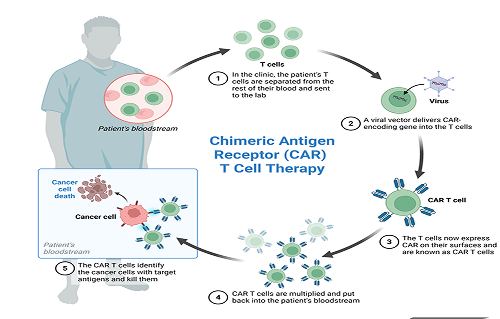

Research in Development
CBP/p300 inhibition to enhance CAR-T cell functionality: implications in hematologic malignancies and solid tumors

This project investigates epigenetic strategies to improve the therapeutic performance of CAR-T cells against hematologic malignancies and solid tumors. The research focuses on targeting the CBP/p300 complex, an epigenetic regulator involved in T cell differentiation and function. By pharmacologically or genetically modulating this complex during CAR-T cell manufacturing, the aim is to promote memory-like and stem-like features associated with improved clinical outcomes. CAR-T cells are evaluated using molecular profiling, immunophenotyping, and functional assays in both in vitro and in vivo models, particularly in HER2+ ovarian cancer. The findings aim to expand the therapeutic scope of CAR-T cell applications.
Modulation of epigenetic targets to enhance the antitumor response of T lymphocytes

Julianna's research focuses on the role of epigenetic regulation in reprogramming tumor-infiltrating lymphocytes (TILs) to improve their function within the tumor microenvironment. The project aims to identify and modulate epigenetic targets that can reverse T cell exhaustion, restore cytotoxic activity, and enhance tumor antigen recognition. By integrating transcriptomic analyses and functional assays, the study seeks to advance the development of strategies that potentiate TIL-based immunotherapies, especially in solid tumors that are resistant to current treatments.